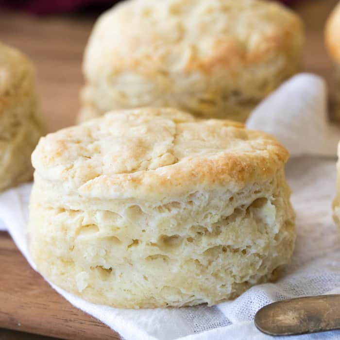

Mamaw's homemade recipe of cheesy goodness will surely bring the smiles to your next potluck. Easy to follow, no-frilli recipe using just cheddar cheese.
Ingredients
- 2 cups flour
- 1 tablespoon baking powder/li>
- 1 tablespoon granulated sugar
- 1 teaspoon salt
- 6 tablespoons unsalted butter, chilled
- 3/4 cup whole milk
Instructions
- Preheat oven to 425F.
- Combine flour, baking podwer, sugar, and salt in large bowl.
- Grate cold butter into mixture, stirring together. Combine until mixture becomes coarse and crumbly.
- Add milk to create dough.
- Work dough on a floured surface. If too sticky, add flour until manageable.
- Once the dough is cohesive, fold in half over itself and use your hands to gently flatten layers together. Rotate the dough 90 degrees and fold in half again, repeating this step 5-6 times but taking care to not overwork the dough.
- Cut pieces out of the dough into biscuits and place on a baking sheet.
- Bake for 12min, until tops start to brown
- Serve immediately and enjoy!